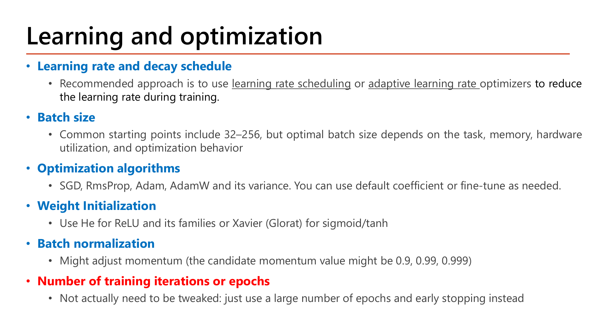
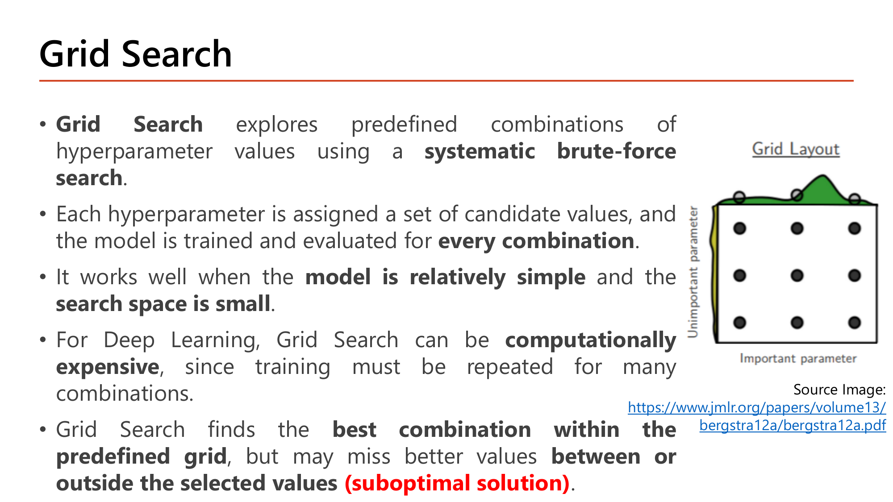

![Slide: Keras Callbacks. A callback is an object passed to model.fit(); the slide shows a custom callback class with on_train_begin, on_train_batch_end and on_epoch_end methods that print messages, and a model.fit call with callbacks=[my_callback()]](../assets/slides/dl6-p01-keras-callbacks-intro.png)
Lecture6 (lecture 6.pdf, 33 หน้า) · 2603520 Deep Learning
บทนี้คือ "เครื่องมือช่วยเทรน" — ตอนนี้คุณรู้แล้วว่า network ทำงานอย่างไร (Lesson 1–5) บทนี้สอนว่าระหว่างเทรนจะสั่งให้ Keras ทำอะไรอัตโนมัติได้บ้าง (หยุดเมื่อไม่ดีขึ้น, เซฟโมเดล, ลด learning rate, ดูกราฟ) และก่อนเทรนจะเลือกค่า hyperparameter (จำนวน layer, learning rate, dropout …) อย่างมีระบบได้อย่างไร.
แนวคิด: การเทรนคือ loop ซ้อน loop — วนทุก epoch, ในแต่ละ epoch วนทุก batch. Callback คือ object ที่เราแนบให้ model.fit() แล้ว Keras จะเรียกฟังก์ชันของมันเองอัตโนมัติ ทุกครั้งที่ถึงจุดที่กำหนด (เช่น "จบ epoch แล้ว") โดยเราไม่ต้องแก้ loop ของ Keras.
ตัวอย่างในสไลด์หน้า 1: สมมติ X มี 150 ตัวอย่าง (ข้อมูลที่ใช้สอนในคาบ), batch_size=64 และเทรน 3 epoch:
on_train_begin ถูกเรียก 1 ครั้ง ตอนเริ่ม → พิมพ์ training start
จากนั้นแต่ละ epoch: on_train_batch_end 3 ครั้ง (พิมพ์ End of batch:1, :2, :3) แล้ว on_epoch_end 1 ครั้ง (พิมพ์ End of epoch:1)
batch ทั้งหมด \(3 \times 3 = 9\) ครั้ง, epoch 3 ครั้ง, train_begin 1 ครั้ง
คำสั่งพิมพ์ทั้งหมด = \(1 + 9 + 3 = 13\) บรรทัด
ข้อมูลที่ callback ได้รับ (logs): ที่ on_train_batch_end มี loss และ accuracy ของ batch นั้น; ที่ on_epoch_end มีเพิ่ม val_loss และ val_accuracy (เพราะ validation ทำหลังจบ epoch). ที่ on_train_begin logs ว่างเปล่า.

ไม่ต้องเขียนเองทุกครั้ง Keras มีตัวสำเร็จรูป 6 ตัว จับคู่ "ปัญหา → callback" ได้ดังนี้:
| อยากได้อะไร | ใช้ callback | หัวข้อ |
|---|---|---|
| หยุดเทรนเมื่อ validation ไม่ดีขึ้นแล้ว | EarlyStopping | §2 |
| เซฟโมเดล/weight ระหว่างเทรน | ModelCheckpoint | §3 |
| เทรนต่อได้หลังไฟดับหรือหลุด | BackupAndRestore | §4 |
| ปรับ learning rate ระหว่างเทรน | LearningRateScheduler, ReduceLROnPlateau | §5 |
| บันทึกผลทุก epoch เป็นไฟล์ csv | CSVLogger | §5 |
| ดูกราฟและ histogram ของ weight | TensorBoard | §6 |
callbacks=[a, b] ทุกตัวถูกเรียกที่จุดเดียวกันตามลำดับใน list. ถ้า validation ทำตอน fit ด้วย (validation_data/validation_split) hook ของฝั่ง test (on_test_begin, on_test_batch_end) จะถูกเรียกทุกจบ epoch ด้วย — เช่น validation 50 แถว batch 32 ⇒ 2 batch ต่อ epoch.
ความหมายของ 4 พารามิเตอร์ในสไลด์:
| พารามิเตอร์ | ค่าในสไลด์ | ความหมาย |
|---|---|---|
monitor | 'val_loss' | ค่าที่ใช้ตัดสินว่า "ดีขึ้นหรือไม่" (เล็กลง = ดี) |
min_delta | 0.001 | ต้องดีขึ้นอย่างน้อยเท่านี้ ถึงนับว่า "ดีขึ้นจริง" (กัน noise) |
patience | 5 | ยอมให้ "ไม่ดีขึ้น" ติดกันได้กี่ epoch ก่อนหยุด |
restore_best_weights | True | หยุดแล้วให้ย้อน weight กลับไปที่ epoch ที่ดีที่สุด |
กติกาที่ใช้ตัดสินแต่ละ epoch:
$$\text{improvement}_t = \text{best} - \text{val\_loss}_t \;\ge\; \text{min\_delta}$$best และรีเซ็ตตัวนับ patience เป็น 0patience ก็หยุดเทรน
ไม่ดีขึ้น (แย่ลง) ⇒ ตัวนับ = 1
ดีขึ้นจริง ⇒ best = 0.4763, ตัวนับ รีเซ็ตเป็น 0
ดีขึ้นจริง (ผ่านเกณฑ์แค่นิดเดียว) ⇒ best = 0.4750, ตัวนับ = 0
ทุก epoch แย่กว่า best (0.4750) เช่น \(0.4750 - 0.4887 = -0.0137\) ⇒ ตัวนับเพิ่มเป็น 1, 2, 3, 4 ตามลำดับ
ถึงเกณฑ์ ⇒ STOP
หยุดที่ epoch 36 แต่ด้วย restore_best_weights=True ได้ weight ของ epoch 31 (val_loss 0.4750) กลับมา — epoch 32–36 (5 epoch) เทรนแล้วทิ้งไป.
epoch 29 นับ 1 → epoch 30, 31 ดีขึ้นรีเซ็ต → epoch 32, 33, 34 นับ 1, 2, 3 ⇒ หยุดที่ epoch 34 (เร็วขึ้น 2 epoch) weight ที่คืนมายังเป็น epoch 31 เหมือนเดิม
epoch 30: \(0.4806 - 0.4763 = 0.0043 < 0.01\) ไม่นับว่าดีขึ้น (ตัวนับ 2); epoch 31: \(0.4806 - 0.4750 = 0.0056 < 0.01\) ไม่นับ (ตัวนับ 3) — เพราะ best ยังค้างที่ 0.4806; epoch 32, 33 ตัวนับเป็น 4, 5 ⇒ หยุดที่ epoch 33 และคืน weight ของ epoch 28 (val_loss 0.4806 ซึ่งแย่กว่า 0.4750)
บทเรียน: min_delta ใหญ่เกินไปจะมองความก้าวหน้าเล็กๆ ที่จริงเป็นของจริงว่าเป็น noise แล้วหยุดเร็วเกินและได้โมเดลที่แย่กว่า.
patience ให้เวลาดูแนวโน้ม, min_delta กันไม่ให้การขยับ 0.0001 นับเป็นความก้าวหน้า, และ restore_best_weights แก้ปัญหาที่ตอนหยุด weight เป็นของ epoch ที่แย่กว่าที่สุดของรอบ.restore_best_weights ได้ weight ของ epoch สุดท้าย (36, val_loss 0.5149 = แย่ที่สุดในตาราง).patience=3 การเทรนจะหยุดที่ epoch ใด?min_delta=0.01, patience=5, restore_best_weights=True (best เริ่ม 0.4806 ที่ epoch 28) weight ของ epoch ใดถูกคืนมา?save, save_weights และ ModelCheckpoint
สองวิธีเซฟ ต่างกันที่ "เก็บอะไร":
save_weights('x.weights.h5') | save('x.keras') | |
|---|---|---|
| เก็บ | เฉพาะตัวเลข weight/bias | โครงสร้าง + weight + สถานะ optimizer |
| ตอนโหลด | ต้อง build_model() ก่อน แล้ว load_weights(...) | load_model('x.keras') ได้เลย |
อ่านตัวเลขจาก model.summary() ในสไลด์ให้เป็น (Total 785 มาจากไหน):
ตรงกับคอลัมน์ Param # ในสไลด์ (30, 110, 110, 11)
Adam เก็บค่าเฉลี่ยเคลื่อนที่ 2 ชุดต่อทุกพารามิเตอร์ (ของ gradient และของ gradient² — Lesson 4 §5) = \(2 \times 261 = 522\) และเก็บตัวแปรเดี่ยวอีก 2 ตัว (ตัวนับรอบ กับ learning rate) ⇒ 524
Total params 785 = Trainable 261 (ใช้ตอน predict) + Optimizer 524 (มีเฉพาะเมื่อเซฟด้วย .save เพื่อให้เทรนต่อได้).

ModelCheckpoint คือการเซฟอัตโนมัติ: ค่าเริ่มต้นเซฟทุกจบ epoch. ถ้าตั้งชื่อไฟล์ตายตัวเช่น 'my_model.keras' ทุก epoch เขียนทับไฟล์เดิม ดังนั้นเมื่อเทรนจบ ไฟล์คือโมเดลของepoch สุดท้าย (ไม่ใช่ epoch ที่ดีที่สุด) — ใช้ตัวเลือกในหน้าถัดไปเพื่อเปลี่ยนพฤติกรรมนี้.

ตัวอย่างในสไลด์ตั้ง monitor='val_accuracy' (ยิ่งสูงยิ่งดี) จึงต้องคู่กับ mode='max' — ทั้งสามตัวเลือกทำงานร่วมกันดังนี้:
| ตัวเลือก | ทำอะไร | ตัวอย่างในสไลด์ |
|---|---|---|
save_best_only=True | เซฟเฉพาะเมื่อค่า monitor ดีที่สุดเท่าที่เคยเห็น | True |
monitor | ค่าที่ใช้เทียบ | 'val_accuracy' |
mode | อยากให้ค่านั้น 'max' หรือ 'min' (auto = เดาจากชื่อ) | 'max' (accuracy ยิ่งสูงยิ่งดี) |
คู่กับ EarlyStopping อย่างไร: EarlyStopping ตัดสินใจเมื่อไหร่หยุด ส่วน ModelCheckpoint(save_best_only) เก็บตัวที่ดีที่สุดไว้บนดิสก์ — ถ้าไม่ใช้ save_best_only ไฟล์จะเป็น weight ของ epoch ที่ตามหลัง best ไป patience epoch (เช่น epoch 36 แทน 31 ในตัวอย่าง §2).

save_freq=6, epochs=5, batch_size=64 จะเซฟไฟล์อะไรบ้างmy_model.{epoch}.{batch}.weights.h55 epoch × 3 = 15 batch (นับต่อเนื่องข้าม epoch: batch ที่ 1, 2, 3 = epoch 1; ที่ 4, 5, 6 = epoch 2; …)
ที่ batch สะสม 6 และ 12 (18 ไม่ถึงเพราะมีแค่ 15)
batch สะสมที่ 6 = ตัวสุดท้ายของ epoch 2 ⇒ my_model.2.3.weights.h5
batch สะสมที่ 12 = ตัวสุดท้ายของ epoch 4 ⇒ my_model.4.3.weights.h5
ได้ 2 ไฟล์: my_model.2.3.weights.h5 และ my_model.4.3.weights.h5 (ตรงกับผล ls ที่สอนในคาบ). สังเกต: การเซฟไม่ได้ตรงกับขอบ epoch เสมอไป ขึ้นกับว่า save_freq หาร 3 ลงตัวหรือไม่.
save_freq เป็น 3 (= 1 epoch พอดี) จะได้ไฟล์ทุก epoch (.1.3, .2.3, .3.3, .4.3, .5.3); เปลี่ยนเป็น 4 จะเซฟที่ batch สะสม 4, 8, 12 = (epoch 2, batch 1), (epoch 3, batch 2), (epoch 4, batch 3). และเมื่อใช้ save_best_only ต้องระวัง monitor กับ mode ให้สอดคล้อง (val_loss ⇒ 'min', val_accuracy ⇒ 'max')..save เทรนต่อได้แต่ save_weights ไม่มีสถานะ optimizer.batch_size=64, epochs=5, ModelCheckpoint('my_model.{epoch}.{batch}.weights.h5', save_freq=6) จะได้ไฟล์ใดบ้าง?
ต่างจาก ModelCheckpoint อย่างไร: ModelCheckpoint เก็บโมเดล (weight) ไว้ใช้งาน แต่ BackupAndRestore เก็บสถานะการเทรน (weight + เลข epoch ที่ทำถึง + optimizer) เพื่อให้เทรนต่อจากจุดที่ขาด และมีไฟล์ backup แค่ 1 ไฟล์ ที่ถูกเขียนทับทุกครั้ง.
fit ใหม่epochs=10, backup ทุก epoch, ถูกขัดจังหวะ (raise error) ตอนเริ่ม epoch ที่ index = 4 (index นับจาก 0)epoch index 0, 1, 2, 3 = 4 epoch และ backup ล่าสุดบันทึกว่า "ทำถึง epoch 4"
fit(..., epochs=10) อีกครั้งด้วยอาร์กิวเมนต์เดิมcallback อ่าน backup แล้วเริ่มที่ epoch index 4
การเทรนครั้งที่สองไม่ใช่ 10 epoch แต่รันแค่ 6 epoch → len(history.history['loss']) = 6 (ตรงกับสิ่งที่สอนในคาบ).
fit รอบสองด้วยโมเดลหรืออาร์กิวเมนต์ compile/fit ที่ต่างไป checkpoint จะใช้ไม่ได้ (สไลด์เน้นว่า "must remain unchanged"). ถ้าตั้ง delete_checkpoint=True ไฟล์ถูกลบเมื่อเทรนจบสำเร็จ จึงไม่ค้างไว้ให้สับสนกับการเทรนรอบถัดไป.epochs=10 พร้อม BackupAndRestore (save_freq='epoch') แต่ถูกขัดจังหวะเมื่อเริ่ม epoch index 4 จากนั้นเรียก fit(..., epochs=10) ซ้ำด้วยอาร์กิวเมนต์เดิม จะรันกี่ epoch?![Slide: Learning Rate Scheduler / CSV Logger callback. At the beginning of every epoch the schedule function takes the epoch index (from 0) and the current learning rate and returns a new learning rate. Code defines lr_function(epoch, lr=0.01, decay_rate=0.9, decay_steps=10000) with exp = floor((1+epoch)/decay_steps) and alpha = lr * decay_rate**exp; an inset shows ReduceLROnPlateau(monitor='val_loss', patience=4, min_delta=0.001, factor=0.1, min_lr=0.001) with early_stopping_cb and CSVLogger('results.csv')](../assets/slides/dl6-p10-lr-scheduler-csvlogger.png)
ทำไมต้องปรับ learning rate: ช่วงแรกอยากก้าวใหญ่ (เข้าใกล้จุดต่ำสุดเร็ว) ช่วงท้ายอยากก้าวเล็ก (ไม่กระโดดข้ามจุดต่ำสุด) — Lesson 4 §5 เห็นแล้วว่า Adam/RMSProp ปรับให้ต่อพารามิเตอร์; callback นี้ปรับให้ต่อ epoch.
สูตรในโค้ดของสไลด์ (เมื่อ \(\alpha\) = learning rate ปัจจุบัน, \(r\) = decay_rate, \(s\) = decay_steps, \(e\) = epoch index เริ่มที่ 0):
ทุกๆ \(s\) epoch คูณ learning rate ด้วย \(r\) เพิ่มอีก 1 ชั้น (\(\lfloor\ \rfloor\) = ปัดลง)
lr=0.01 ที่ตั้งเป็น default จึงถูกเมินเสมอ| epoch index \(e\) | 0 | 1 | 2 | 3 | 4 |
|---|---|---|---|---|---|
| \(\lfloor (1+e)/2 \rfloor\) | 0 | 1 | 1 | 2 | 2 |
ไม่ตรงกัน! เพราะของจริงคูณซ้อนทุก epoch
ลำดับจริงที่ Keras ให้: 0.03, 0.027, 0.0243, 0.019683, 0.0159432 (ตรงกับที่ log ในคาบพิมพ์) — และเมื่อเทรนต่อถึง epoch 50 ค่านี้เหลือประมาณ \(7.6\times10^{-31}\) จน weight ไม่ขยับอีกเลย.
alpha = lr * decay_rate**exp จึงคูณต่อจากค่าเดิมทุก epoch (compounding) ไม่ใช่คิดจากค่าตั้งต้นครั้งเดียว. ถ้าต้องการ "ลดทีละขั้นจากค่าตั้งต้น" ต้องเก็บค่าเริ่มต้นไว้นอกฟังก์ชัน หรือใช้ตัวคูณคงที่ต่อ epoch.decay_steps=10000 ทำให้ \(\lfloor (1+e)/10000 \rfloor = 0\) สำหรับ epoch ที่น้อยกว่า 9,999 ⇒ \(r^0 = 1\) ⇒ learning rateไม่เปลี่ยนเลยตลอด 50 epoch. ในทางกลับกัน \(s=2\) ทำให้เลขชี้กำลังโตเรื่อยๆ (0, 1, 1, 2, 2, 3, … ถึง 25 ที่ epoch 50) แล้วคูณซ้อน ⇒ lr ดิ่งจนเทรนไม่ได้ (val_loss ค้างที่ 0.6549 ในสคริปต์คาบ).กติกา: ถ้า monitor ไม่ดีขึ้น (ตามเกณฑ์ min_delta) ติดกัน patience epoch ให้ลดตามสูตร
factor=0.1, min_lr=0.001 เริ่มที่ 0.03 (ตามสไลด์)0.0003 ต่ำกว่าพื้น ⇒ ถูก "ดันขึ้น" มาที่ 0.001
learning rate ไล่ 0.03 → 0.003 → 0.001 แล้วค้างที่ 0.001 ตลอดไป (ตรงกับคอลัมน์ learning_rate ตอนท้ายการเทรนในคาบ).
ข้อดีเทียบกับ 5.1: ไม่มีปัญหา "คูณซ้อนโดยไม่รู้ตัว" และไม่ต้องเดาล่วงหน้าว่าจะลดตอนไหน — มันลดตอน validation หยุดพัฒนาจริงๆ; ข้อเสียคือต้องตั้ง patience/min_delta ให้เหมาะ. CSVLogger (CSVLogger("results.csv")) แค่เขียนตัวเลข logs ของทุก epoch ลงไฟล์ csv ให้เอาไปวิเคราะห์ต่อ — ไม่มีการคำนวณ.
lr*decay_rate**floor((1+epoch)/decay_steps) ด้วย decay_rate=0.9, decay_steps=2 และ Keras ส่ง lr ปัจจุบันเข้าฟังก์ชัน learning rate ของ epoch index 3 (epoch ที่ 4) คือเท่าใด?ReduceLROnPlateau(patience=4, factor=0.1, min_lr=0.001) เริ่มที่ lr = 0.03 หลังติดแหง็กครบ 3 รอบ (ลดครั้งที่ 1, 2, 3) learning rate จะเป็นเท่าใด?![Slide: TensorBoard, a browser-based application that monitors information during training: metrics, histograms of weights and biases, computational graphs, images. Two example loss charts labelled Model does not learn anything (loss wobbling between 10 and 15 with no trend) and Model learns all the information (loss falling from above 25 to about 10 and flattening). A histogram chart of layer1/biases annotates percentile bands: maximum, 93%, 84%, 69%, median (50%), minimum. Code: TensorBoard(log_dir=...) passed to model.fit with epochs=20 and validation_split=0.2](../assets/slides/dl6-p11-tensorboard-overview.png)
อ่านกราฟ loss สองแบบในสไลด์: แบบซ้าย "Model does not learn anything" — loss แกว่งอยู่ระหว่างประมาณ 10 ถึง 15 ตลอดตั้งแต่ step ที่ 400 ถึง 2,800 โดยไม่มีแนวโน้มลดลง แปลว่า weight ไม่ได้พัฒนา; แบบขวา "Model learns" — loss ตกจากเกิน 25 ลงมาราว 10 ภายใน ~1,000 step แล้วค่อยๆ แบนราบ = การเรียนรู้ปกติ. ถ้ากราฟ loss ของคุณหน้าตาแบบซ้าย ให้สงสัย learning rate, การ initialize หรือ vanishing gradient (§7) ก่อนจะไปแก้เรื่องอื่น.
อ่าน histogram ของ weight/bias: แต่ละแถบสีคือ "ช่วงเปอร์เซ็นไทล์" ของค่า weight ทั้ง layer ที่แต่ละ epoch (แกนนอน = epoch) — ขอบบนสุดคือค่าสูงสุด, ขอบล่างสุดคือค่าต่ำสุด, ตรงกลางคือ median (50%). แถบที่ "บานออก" เมื่อ epoch เพิ่มขึ้น = weight กำลังกระจายออก (เรียนรู้); แถบ "แบนคงที่" = weight ไม่ขยับ.

โค้ดในสไลด์ตั้งพารามิเตอร์ 4 ตัว แต่ละตัวควบคุมสิ่งที่ TensorBoard จะแสดง:
| พารามิเตอร์ | ทำอะไร |
|---|---|
log_dir | โฟลเดอร์เก็บ log ที่ TensorBoard ไปอ่าน |
histogram_freq=1 | คำนวณ histogram ของ weight/activation ทุก 1 epoch |
write_graph=True | เก็บโครงสร้าง computational graph ให้ดูในแท็บ Graphs |
update_freq='epoch' | เขียน loss/metric ลง log ทุกจบ epoch (แทนทุก batch) |
ตัวอย่างชื่อโฟลเดอร์แบบมี timestamp ในสไลด์ logs/fit/20210315-031559 อ่านเป็น "15 มี.ค. 2021 เวลา 03:15:59" — ตั้งแบบนี้เพื่อให้การเทรนแต่ละครั้งอยู่คนละโฟลเดอร์ แล้ว TensorBoard เทียบหลายรอบบนกราฟเดียวกันได้ (ถ้าใช้ชื่อเดิมซ้ำ log จะปนกัน จึงมีคำสั่ง rm -rvf logs ล้างก่อน).

make_circles(1000, noise=0.1) (Lecture6, p.14)X_train shape (1000, 2), validation_split=0.2, ไม่ระบุ batch_size (ค่า default ของ Keras = 32)25 step ต่อ epoch — ตรงกับ progress bar 25/25 ที่เห็นตอน fit. (make_circles ให้จุดสองวงซ้อนกันที่เส้นตรงแยกไม่ได้ จึงต้องมี hidden layer.)
แท็บอื่นของ TensorBoard (สไลด์หน้า 12): Scalars = กราฟ loss/accuracy, Graphs = โครงสร้างโมเดล, Distributions/Histograms = การกระจายของ weight, และแท็บเสริม Time Series / Image / Text.

โจทย์: ทำไมโมเดลนี้เทรนไม่ขึ้น ทั้งที่ทุกอย่างดูปกติ? ตัวการคือบรรทัด kernel_initializer=RandomUniform(0,1) — ค่า weight เริ่มต้นสุ่มจาก 0 ถึง 1 ซึ่งเป็นบวกทั้งหมด เฉลี่ย 0.5 (ต่างจาก Lesson 5 §2 ที่ต้องการ weight เฉลี่ย 0 และ variance ที่คุมไว้).
เพราะ weight เป็นบวกหมด ผลรวมจึงไม่หักล้างกัน (ต่างจาก weight ที่บวก/ลบผสม)
ใกล้ขอบ 1 แล้ว (และ layer ถัดไปจะได้ input ≈ 0.98 ทำให้ z ยิ่งใหญ่ขึ้น)
gradient ที่ไปถึง layer แรกสุดเหลือระดับ \(10^{-9}\) เทียบกับตอนเริ่ม ⇒ weight ของ layer ล่างแทบไม่ถูกอัปเดต (ตัวเลข 0.9 กับ 0.5 เป็นสมมติเพื่อดูกลไก แต่ข้อสรุปเชิงขนาดไม่เปลี่ยน).

ทางแก้ 1 — ReLU + He: เปลี่ยน tanh เป็น relu (ความชัน = 1 เมื่อ \(z > 0\) ไม่อิ่มตัว) และเปลี่ยน initializer เป็น he_normal (variance \(2/n_{in}\) จาก Lesson 5 §2). ผลที่เห็นในแผง histogram ด้านบน: bias ของทุก layer "บานออก" จนช่วงอ่านได้ประมาณ ±0.1 ถึง ±0.2 ภายใน 20 epoch = weight กำลังเรียนรู้จริง.
ทางแก้ 2 (ตัวอย่างกรณีตรงข้าม) — learning rate เล็กเกิน: แผงล่างขวาใช้ SGD lr = 0.0001: แกนของ bias เหลือระดับ 2×10⁻⁴ ถึง 4×10⁻⁴ (เล็กกว่าแผงบนประมาณ 500 เท่า — สไลด์ไม่ได้ระบุ lr ของแผงบน จึงเทียบได้แค่ขนาดคร่าวๆ) และแถบ kernel เป็นแนวราบตลอด 20 epoch — เพราะการอัปเดตต่อก้าวคือ \(\Delta\theta = -\alpha\,\nabla J\) ยิ่ง \(\alpha\) เล็ก weight ยิ่งแทบไม่ขยับ. อาการ "กราฟแบนราบ" จึงมีอย่างน้อยสองสาเหตุที่ต้องแยก: gradient เล็ก (vanishing) กับ learning rate เล็ก.

สไลด์ระบุ 3 อาการที่บอกว่ากำลังเจอ exploding gradient ตารางนี้จับคู่แต่ละอาการกับสิ่งที่จะเห็นจริงในกราฟ/log และสิ่งที่ควรสงสัยก่อน:
| อาการ (สไลด์) | สิ่งที่เห็นในกราฟ/log | ควรสงสัยอะไร |
|---|---|---|
| โมเดลไม่ "จับ" ข้อมูล train (loss แย่) | loss ค้างสูง ไม่ลด | learning rate, init, vanishing |
| ไม่เสถียร loss กระโดดใหญ่ระหว่างการอัปเดต | loss ขึ้นๆ ลงๆ แรงๆ | learning rate ใหญ่เกิน, gradient ใหญ่ |
| loss กลายเป็น NaN | loss: nan | exploding เต็มที่ (weight ล้นเป็น ∞) |
ตัวอย่างที่สอนในคาบ: โมเดล ReLU+He เดิมแต่เพิ่ม learning rate เป็น 0.2 (momentum 0.9) — val_accuracy ค้างประมาณ 0.5 (เท่าเดา) และ loss แกว่งรอบ 0.69 ซึ่งใกล้ \(\ln 2 \approx 0.693\) (ค่า cross-entropy ของโมเดลที่ทำนาย 0.5 ทุกตัวอย่าง — Lesson 1). ทางแก้: ลด learning rate, gradient clipping (Lesson 5 §1) หรือ Batch Normalization.
ไม่ว่า z เดิมจะใหญ่แค่ไหน (เช่นถ้าเป็น 200, 400, 600, 800 ก็ได้ \(\hat z\) ชุดเดิมเป๊ะ) ค่าที่ส่งเข้า activation ถัดไปคงอยู่ราว ±1.3 เสมอ ⇒ ไม่ระเบิด และไม่ตกไปอยู่ในโซน saturation ของ tanh/sigmoid.
สไลด์หน้า 18 เป็นสไลด์หัวข้อ "Solve Vanishing/Exploding using Batch Norm." (ไม่มีเนื้อหาเพิ่ม) — ในสคริปต์คาบเทียบการวาง BN สองแบบ: หลัง activation (Dense(relu) → BatchNormalization) กับก่อน activation (Dense → BatchNormalization → Activation('relu')) ซึ่งตรงกับตัวเลือก "normalize z / normalize a" ใน Lesson 5 §3.
RandomUniform(0,1) เป็น RandomUniform(-1,1) weight บวก/ลบผสมกัน ผลรวม z หักล้างกัน (mean = 0) ⇒ z ไม่พุ่งไปที่ 2.25 ⇒ tanh ไม่อิ่มตัวง่ายๆ — สอดคล้องกับ Lesson 5 §2 ที่การคุม mean/variance ของ z คือหัวใจของ initialization.RandomUniform(0,1) เทรนไม่ขึ้นเพราะเหตุผลกลไกใดมากที่สุด?สไลด์หน้า 19 ตั้งต้นด้วยหลักการ: hyperparameter เหมือนปุ่มหมุนที่ต้องจูนเพื่อให้ได้ผลดีที่สุด และเพราะในโมเดลลึกการจูนด้วยมือช้าและมักไม่ดีที่สุด การจูนแบบอัตโนมัติจึงคุ้มกว่า.

สไลด์แบ่ง hyperparameter เป็น 3 หมวด แต่ละหมวดตอบคำถามต่างกัน:
| หมวด | ตอบคำถามว่า | ตัวอย่าง |
|---|---|---|
| Network architecture | โมเดล "ใหญ่" แค่ไหน | จำนวน layer, จำนวน neuron, activation |
| Learning & optimization | โมเดลเรียนรู้ "อย่างไร" | learning rate/schedule, batch size, optimizer, init, BN, epochs |
| Avoid overfitting | ป้องกันจำข้อสอบเก่า | L2 (\(\lambda\)), dropout rate, data augmentation |

สไลด์หน้า 21–23 ให้ "สูตรลัด" ที่ไม่ต้องค้นหาเลยในหลายเรื่อง — ตารางด้านล่างสรุปว่าไม่ต้องจูนตัวไหน และต้องจูนตัวไหน:
| Hyperparameter | คำแนะนำในสไลด์ |
|---|---|
| Activation (hidden) | ReLU และตระกูลของมัน เป็น default; output layer ขึ้นกับงาน (sigmoid สำหรับ binary, softmax หลายคลาส) |
| Weight init | He สำหรับ ReLU, Xavier (Glorot) สำหรับ sigmoid/tanh — เลือกตาม activation ไม่ต้องค้น |
| Number of epochs | ไม่ต้องจูน: ตั้งเยอะๆ แล้วใช้ early stopping (§2) |
| Batch size | เริ่มที่ 32–256 (ขึ้นกับงาน หน่วยความจำ ฮาร์ดแวร์) |
| Learning rate | ใช้ schedule หรือ optimizer แบบปรับเอง (§5, Lesson 4 §5) |
| Batch Norm momentum | ลองค่า 0.9 / 0.99 / 0.999 |
| จำนวน layer / neuron | ต้องจูน — เริ่ม "ใหญ่พอ" แล้วดูผล |
| L2 \(\lambda\), dropout rate, augmentation | ต้องจูน — ปรับตามอาการ overfit |
เพิ่ม hidden จาก 32 เป็น 128 (×4) ทำให้พารามิเตอร์เพิ่ม ×4 เกือบพอดี เพราะ layer แรกที่คูณกับ input 10,000 ครองเกือบทั้งหมด. ถ้าข้อมูล train มีแค่ 25,000 ตัวอย่าง พารามิเตอร์ 1.28 ล้านตัวเป็นตัวการให้ overfit ได้ง่าย — นี่คือเหตุผลที่สไลด์บอกให้ "ลดจำนวน hidden unit หรือใช้วิธีลด overfitting" เมื่อเห็นอาการ.
สไลด์หน้า 24 สรุปขั้นตอนมาตรฐานของการจูน 4 ขั้น (นำไปใช้ใน §10): (1) ระบุ hyperparameter และช่วงค้นหา → (2) สร้างโมเดลที่รับค่าเหล่านั้น → (3) เลือกอัลกอริทึมค้นหา → (4) เซฟโมเดลที่ดีที่สุดแล้ววัดผลบน test set.

อ่านรูป (Grid Layout): แกนนอนคือพารามิเตอร์ที่ "สำคัญ" (มีผลต่อคะแนนมาก — เส้นโค้งสีเขียวด้านบนคือคะแนนที่แกนนี้) ส่วนแกนตั้งคือพารามิเตอร์ที่ "ไม่สำคัญ". จุด 9 จุดเรียงเป็น 3 แถว × 3 คอลัมน์ ⇒ แม้ลองทั้งหมด 9 ครั้ง ค่าของพารามิเตอร์สำคัญที่ถูกทดสอบมีแค่ 3 ค่าไม่ซ้ำกัน (แถวที่เหลือทดสอบค่าเดิมซ้ำ แค่ไปเปลี่ยนพารามิเตอร์ที่ไม่สำคัญ).
num_layers ∈ {1, 2}; units_i ∈ [10, 50] step 1 = 41 ค่า/layer; activation ∈ {relu, elu, selu} (3 ค่า ใช้ร่วมกัน); dropout_i ∈ {0, 0.1, …, 0.5} = 6 ค่า/layer; lr ต่อเนื่อง — สมมติตาราง 5 ค่า~ 911,430 ครั้งของการเทรน (ถ้าครั้งละ 1 นาทีก็เกือบ 1.7 ปี) — ในสไลด์หน้า 31 การค้นด้วย Hyperband ใช้เพียง 211 trial ใช้เวลา 43 นาที 46 วินาที. นี่คือความหมายของ "computationally expensive" ที่สไลด์บอก: จำนวนชุดโตแบบคูณตามจำนวนตัวเลือกทุกตัว.

ใช้งบ 9 ครั้งเท่ากัน แต่ Random Layout ทดสอบพารามิเตอร์สำคัญที่ 9 ค่าไม่ซ้ำกัน (เทียบกับ Grid ที่ได้ 3 ค่า) — จึงมีโอกาสใกล้ค่าที่ดีที่สุดมากกว่ามาก นี่คือความหมายของ "fewer, more diverse combinations" ในสไลด์. ข้อเสียที่สไลด์ระบุ: มันเป็น blind search คือไม่ใช้ผลของ trial ก่อนหน้าเลย อาจพลาดย่านที่ดี.

ไอเดีย: ให้ทุก configuration ลองเทรนด้วยงบน้อย (เช่น 1 epoch) ก่อน — ตัวที่แย่ตั้งแต่ต้นมักแย่ต่อไป จึงตัดทิ้ง เก็บเฉพาะตัวที่ดี (ตัวละ 1/η) แล้วเพิ่มงบ η เท่า ให้ตัวรอด ทำซ้ำจนเหลือตัวเดียวที่ได้งบเต็ม. สูตรของ bracket ที่ให้ \(n\) = จำนวนเริ่มต้น, \(r\) = งบเริ่มต้น, \(\eta\) = ตัวคูณ:
$$n_i = \left\lfloor n\,\eta^{-i} \right\rfloor,\qquad r_i = r\,\eta^{\,i}$$ตรงกับคอลัมน์ \(s=4\) ของตาราง
ทุกรอบใช้งบเท่ากัน 81 ⇒ ทั้ง bracket = \(5\times81 = 405\) epoch
ค้นหา 81 configuration ด้วยงบ 405 epoch แทน 6,561 (ถูกกว่าราว 16 เท่า) เพราะ configuration ที่แย่ถูกตัดตั้งแต่ใช้ไปแค่ 1–3 epoch. ใน KerasTuner (สไลด์หน้า 30) พารามิเตอร์ max_epochs=81, factor=3 คือ \(\text{max\_iter}=81,\ \eta=3\) ตัวเดียวกันนี้.
![Slide: Bayesian Optimization uses information from past trials to choose the next hyperparameters, needing fewer iterations. Two components: a surrogate model (a probabilistic model, Gaussian Process, that learns the mapping from hyperparameters to expected performance) and an acquisition function (decides where to exploit or explore). Three plots of UCB(x) = mu(x) + lambda sigma(x) for lambda=0.2, 1.2 and 5 show the true function as a dashed line, red surrogate, blue acquisition curve and green confidence interval; the note says a larger lambda favours uncertain regions (exploration) while a smaller lambda favours high predicted values (exploitation)](../assets/slides/dl6-p28-bayesian-optimization.png)
ไอเดีย: ทุกครั้งที่ลอง ได้คู่ (hyperparameter → คะแนน) เพิ่มอีก 1 จุด. Surrogate model (Gaussian Process ตามตำนานรูป) เรียนรู้จากจุดที่มีแล้วบอกว่า "ที่ค่า \(x\) นี้ คาดว่าคะแนนเฉลี่ย \(\mu(x)\) และไม่แน่ใจเท่าไร \(\sigma(x)\)". จากนั้น acquisition function แบบ UCB ให้คะแนนจุดที่จะลองต่อไป:
$$\text{UCB}_\lambda(x) = \mu(x) + \lambda\,\sigma(x)$$คะแนนที่คาดไว้ + โบนัสให้จุดที่ยังไม่ค่อยรู้ (ยิ่งไม่แน่ใจ ยิ่งได้โบนัสมาก); \(\lambda\) คือตัวปรับว่าให้โบนัสมากแค่ไหน
A สูงกว่า ⇒ ลอง A (ตามความคาดหวังเฉลี่ย)
B สูงกว่ามาก ⇒ ลอง B (ย่านที่ยังไม่รู้)
ค่าเฉลี่ยต่ำกว่า (B: 0.80) ก็ถูกเลือกได้ ถ้า λ ใหญ่พอให้โบนัสความไม่แน่ใจชนะ — ตรงกับรูป λ = 5 ในสไลด์ที่เส้นน้ำเงิน (acquisition) พุ่งสูงในย่านที่ไม่มีจุดข้อมูล.
max_iter=81, η=3 bracket s=4 (เริ่ม 81 configuration ด้วยงบ 1) ในรอบ i=2 จะมี \((n_i, r_i)\) เท่าใด?![Slide: Implementation using Keras Tuner. pip install keras-tuner. A HyperModel is a function build_model(hp) that returns a compiled Keras model; hp is the HyperParameter object. Code: for i in range(hp.Int('num_layers', min_value=1, max_value=2)) add Dense(units=hp.Int('units_'+str(i), min_value=10, max_value=50, step=1), activation=hp.Choice('activation', values=['relu','elu','selu'])) and Dropout(hp.Float('dropout_'+str(i), 0, 0.5, step=0.1)); output Dense(1, sigmoid); compile with Adam(learning_rate=hp.Float('lr', 1e-4, 1e-2, sampling='log')). A boxed example shows hp.Boolean('dropout')](../assets/slides/dl6-p29-keras-tuner-hypermodel.png)
แนวคิด: แทนที่จะเขียน Dense(32, ...) ด้วยตัวเลขตายตัว ให้เขียน Dense(hp.Int("units", 10, 50)) — "ช่อง" ที่ tuner จะมาเติมค่าเอง. ประเภทของช่อง:
| ฟังก์ชัน | ความหมาย | ตัวอย่างในสไลด์ |
|---|---|---|
hp.Int(name, min, max, step) | จำนวนเต็มในช่วง | num_layers 1–2; units 10–50 |
hp.Float(name, min, max, step / sampling) | ทศนิยมในช่วง | dropout 0–0.5 step 0.1; lr 1e-4–1e-2 แบบ log |
hp.Choice(name, values) | เลือก 1 จากรายการ | activation ∈ {relu, elu, selu} |
hp.Boolean(name) | จริง/เท็จ | ใช้ dropout หรือไม่ |
sampling='log'ค่าเกือบทั้งหมดจะไปกองแถว 0.001–0.01
แบบ log ให้ความน่าจะเป็นเท่ากันทุก "ระดับ" (\(10^{-4}\!\sim\!10^{-3}\) เท่ากับ \(10^{-3}\!\sim\!10^{-2}\)) — เหมาะกับ learning rate ที่สิ่งสำคัญคือขนาดหลัก (เลขชี้กำลัง) ไม่ใช่ผลต่างเชิงเส้น.
![Slide: Create a Tuner with Specific Search Algorithms. Choose a tuner class: GridSearch, RandomSearch, HyperBand or BayesianOptimization. Code: kt.Hyperband(build_model, objective='val_accuracy', max_epochs=81, factor=3, directory='kt_dir', project_name='kt_hyperband', seed=42), then tuner.search_space_summary() printing search space size 5 with num_layers (Int 1 to 2), units_0 (Int 10 to 50), activation (Choice relu/elu/selu), dropout_0 (Float 0.0 to 0.5 step 0.1) and lr (Float 0.0001 to 0.01, sampling log)](../assets/slides/dl6-p30-keras-tuner-create-tuner.png)
อ่าน search_space_summary() ในสไลด์: "Default search space size: 5" — ทั้งที่โค้ดมี units_i และ dropout_i ให้ layer ที่ 2 ด้วย แต่ tuner เห็น units_0, dropout_0 เท่านั้น เพราะ hyperparameter ถูกสร้างตอนที่โค้ดรันผ่านบรรทัดนั้นจริงๆ — units_1/dropout_1 จะโผล่มาเมื่อ tuner สุ่มได้ num_layers = 2 (hyperparameter แบบมีเงื่อนไข). 4 ตัวเลือก tuner คือ 4 อัลกอริทึมของ §9 โดยส่ง build_model เข้าไปเหมือนกัน เปลี่ยนแค่ชื่อคลาส (kt.RandomSearch, kt.Hyperband, kt.BayesianOptimization, …).
![Slide: Run Tuner Search and Query the Results. tuner.search(X, y, epochs=20, validation_split=0.4, batch_size=512, callbacks=[early_stopping_cb]); output: Trial 211 Complete in 39s with val_accuracy 0.8910, best val_accuracy so far 0.8936, total elapsed time 43m46s. Then best_model = tuner.get_best_models()[0]; best_model.evaluate(Xtest, ytest) prints loss 0.2904 and accuracy 0.8845; accuracy on the first 10 test reviews is 0.8](../assets/slides/dl6-p31-tuner-search-query-results.png)
tuner.search(X, y, epochs=20, validation_split=0.4, batch_size=512, callbacks=[early_stopping_cb])เหมือน model.fit ทุกอย่าง (รวม early stopping จาก §2!) แต่ทำซ้ำต่อ 1 trial. validation 40% ⇒ IMDB 25,000 → train 15,000 / validation 10,000.
Trial 211 Complete [00h 00m 39s]ค้นไป 211 trial (ตัวอย่างสุดท้ายใช้ 39 วินาที), val_accuracy: 0.8910 คือคะแนนของ trial นี้
Best val_accuracy So Far: 0.8936ดีที่สุดใน 211 trial = 89.36% (วัดบน validation ทั้งหมด) ใช้เวลารวม 43 นาที 46 วินาที
best_model = tuner.get_best_models()[0]ดึงโมเดลของ trial ที่ดีที่สุด (ที่ epoch ที่ val ดีที่สุดของ trial นั้น)
best_model.evaluate(Xtest, ytest)ให้ [0.2904, 0.8845] = [loss, accuracy] บน test set
validation 0.8936 สูงกว่า test 0.8845 เล็กน้อย — สมเหตุสมผล เพราะเราเลือกโมเดลจาก validation จึงมี "ความโชคดี" ปนอยู่; test set ที่ไม่เคยใช้ตัดสินใจคือตัวเลขที่ซื่อสัตย์กว่า และใช้ครั้งเดียวตอนท้าย.
callbacks=[early_stopping_cb] ในทุก trial ให้แต่ละ trial ไม่เสียเวลาเทรนเกินจำเป็น (เชื่อม §2).objective จาก val_accuracy เป็น val_loss ทิศทางกลับ (ต้องต่ำสุด แทนสูงสุด) และโมเดลที่ "ดีที่สุด" อาจเป็นคนละตัว (accuracy กับ loss ไม่จำเป็นต้องเห็นตรงกัน). ถ้าใช้ test set ตัดสินใจระหว่างค้น จะทำให้ตัวเลข test กลายเป็น optimistic เหมือน validation (data leakage).สไลด์สรุปไว้ 3 ข้อ (หน้า 32) ซึ่งทั้งหมดผูกกับสิ่งที่คำนวณมาแล้ว:
สมมติผลออกมา learning rate ที่ดีที่สุดอยู่แถว 0.0006 และคะแนนของค่าอื่นๆ ตกลงห่างจากแถบนี้
ช่วงเดิมกว้าง \(\log_{10}(100) = 2\) ระดับ ช่วงใหม่กว้าง \(\log_{10}(5) \approx 0.7\) ระดับ ⇒ พื้นที่ค้นหาเล็กลงราว \(2/0.7 \approx 2.9\) เท่า และทุก trial ตกในย่านที่มีแนวโน้มดีแล้ว
ในสคริปต์ที่สอนในคาบ ผู้สอนทำแบบนี้จริง: Bayesian รอบแรกได้ learning rate ≈ 0.000624 แล้วล็อกไว้ และทดลองต่อกับ weight decay 6 ค่า (0 … 1e-4) ซึ่งให้ val_loss ต่างกันเพียง 0.2657–0.2687 (ต่างกัน < 0.01) — สัญญาณว่าตัวนั้นไม่ใช่ปุ่มสำคัญ ไม่ควรเสียเวลาค้นละเอียดกว่านี้.
hp.Float('lr', 1e-4, 1e-2, sampling='log') ความน่าจะเป็นที่ได้ lr < 0.001 เท่ากับเท่าใด?save_freq) เซฟไฟล์อะไร, คำนวณ learning rate ของ LearningRateScheduler (รวมข้อควรระวังเรื่องคูณซ้อน) และของ ReduceLROnPlateau, อธิบายว่าทำไม RandomUniform(0,1) ทำให้ tanh อิ่มตัว, และเปรียบเทียบ Grid/Random/HyperBand/Bayesian ด้วยตัวเลข (911,430 ชุด vs 211 trial; งบ 405 vs 6,561; UCB).
| หน้า | เนื้อหา | สถานะ |
|---|---|---|
| 1 | Keras Callbacks — โค้ด callback เอง | ✓ §1 (มีรูป, คำนวณ) |
| 2 | Built-in Callbacks | ✓ §1 (มีรูป) |
| 3 | EarlyStopping Callback | ✓ §2 (มีรูป) |
| 4 | Results — ตารางไล่ epoch 28–36 | ✓ §2 (มีรูป, คำนวณเต็ม) |
| 5 | Save the Model (Manually) + model.summary | ✓ §3 (มีรูป, คำนวณเต็ม) |
| 6 | ModelCheckpoint Callback | ✓ §3 (มีรูป) |
| 7 | More Saving Criteria (save_best_only, monitor, mode) | ✓ §3 (มีรูป) |
| 8 | More Saving Criteria (2) — save_freq | ✓ §3 (มีรูป, คำนวณเต็ม) |
| 9 | BackupAndRestore Callbacks | ✓ §4 (มีรูป, คำนวณเต็ม) |
| 10 | Learning Rate Scheduler / CSV Logger | ✓ §5 (มีรูป, คำนวณเต็ม) |
| 11 | TensorBoard — ภาพรวมและ histogram | ✓ §6 (มีรูป) |
| 12 | TensorBoard Main Components | ✓ §6 (อธิบายในเนื้อหา) |
| 13 | TensorBoard Callback | ✓ §6 (มีรูป) |
| 14 | Exercise — Circle Dataset | ✓ §6 (มีรูป, คำนวณ) |
| 15 | Gradient Vanishing Problems | ✓ §7 (มีรูป, คำนวณ) |
| 16 | Try using ReLU and He initialization | ✓ §7 (มีรูป) |
| 17 | Exploding Gradients Problems | ✓ §7 (มีรูป) |
| 18 | Solve Vanishing/Exploding using Batch Norm. (สไลด์หัวข้อ) | ✓ §7 (คำนวณ BN) |
| 19 | Hyperparameter Tuning — หลักการ | ✓ §8 |
| 20 | Hyperparameter Tuning — 3 หมวด | ✓ §8 (มีรูป) |
| 21 | Network architecture | ✓ §8 (คำนวณ) |
| 22 | Learning and optimization | ✓ §8 (มีรูป) |
| 23 | Strategies to avoid overfitting | ✓ §8 (ตาราง) |
| 24 | Common Steps in Hyperparameters Tuning | ✓ §8 |
| 25 | Grid Search | ✓ §9 (มีรูป, คำนวณ) |
| 26 | Random Search | ✓ §9 (มีรูป) |
| 27 | HyperBand | ✓ §9 (มีรูป, คำนวณเต็ม) |
| 28 | Bayesian Optimization | ✓ §9 (มีรูป, คำนวณ) |
| 29 | Implementation using Keras Tuner | ✓ §10 (มีรูป) |
| 30 | Create a Tuner with Specific Search Algorithms | ✓ §10 (มีรูป) |
| 31 | Run Tuner Search and Query the Results | ✓ §10 (มีรูป, คำนวณ) |
| 32 | Hyperparameter Tuning Issues | ✓ §11 |
| 33 | References | etc — รายการอ้างอิง (Chollet, Géron, Ng, Heaton) |
สงสัยตรงไหน ถามได้เลยในแชท — ผมเป็นผู้สอนของคุณ ถามซ้ำได้ ถามลึกได้ ไม่ต้องเกรงใจ.